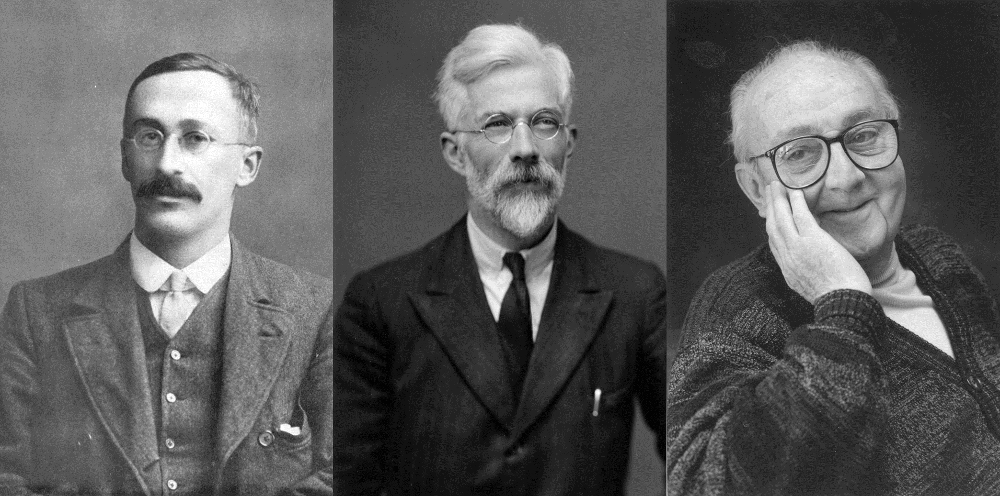
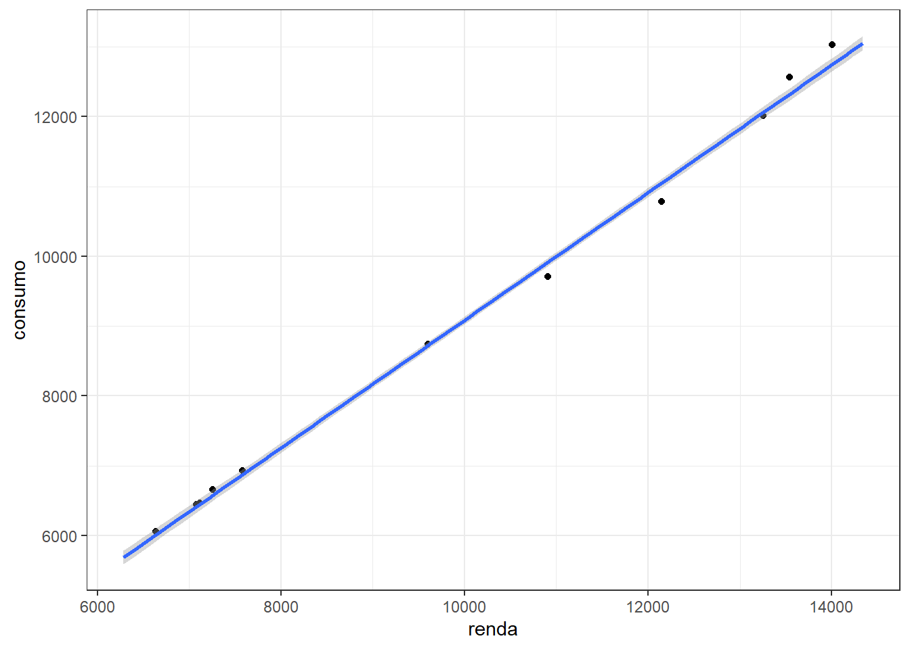
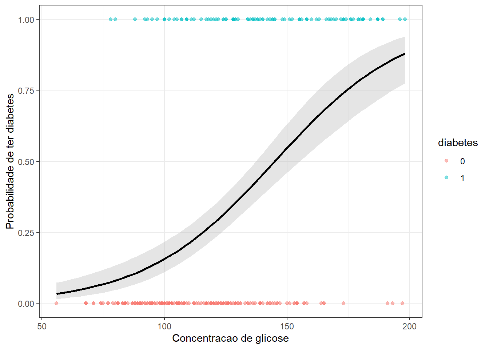
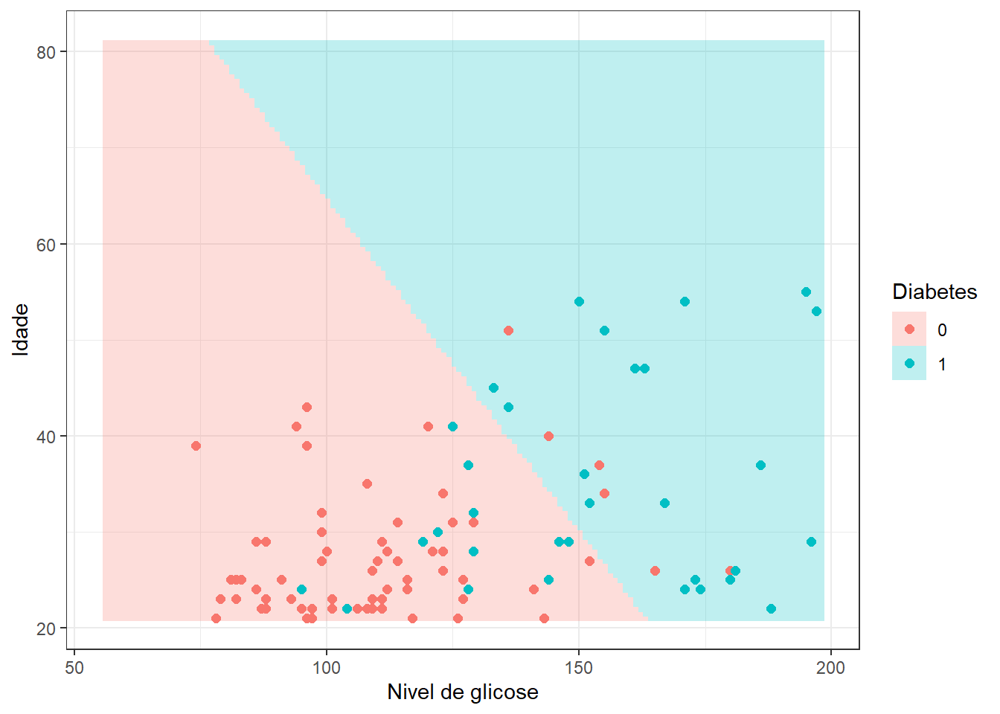
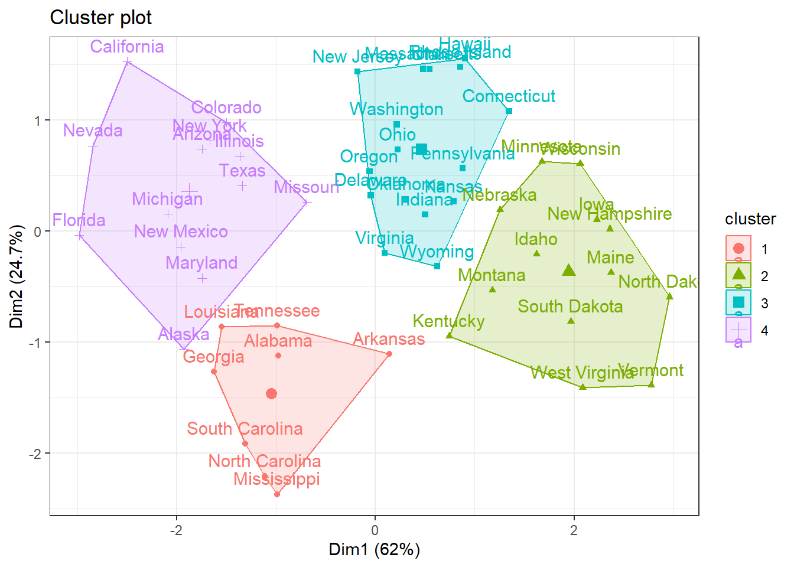
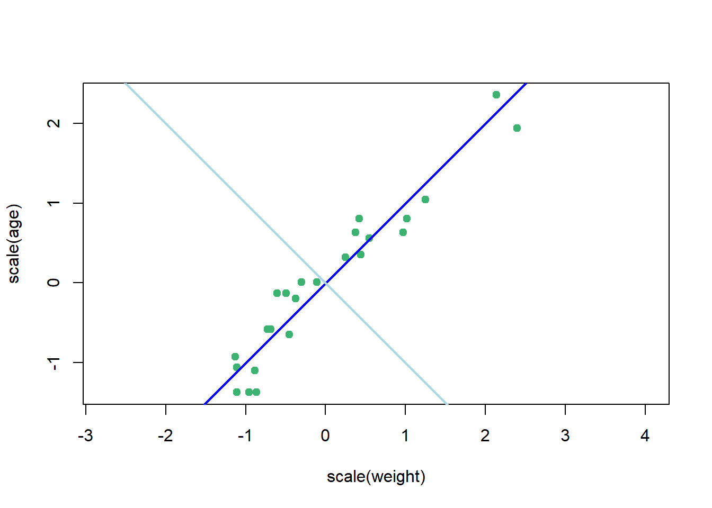

1 Introdução ao aprendizado supervisionado
1.1 Aprendizado
No contexto da ciência de dados (data science) o aprendizado consiste em adquirir um determinado comportamento a partir dos dados disponíveis. Mais especificamente, este comportamento a ser aprendido está relacionado a previsão de uma determinada resposta de interesse em função de outras variáveis ou atributos disponíveis nos dados. Esta resposta pode ser quantitativa, ou seja, medida em uma esclaa real, ou qualitativa, constando de um conjunto finito de possibilidades. Para tal, obviamente faz-se necessário a utilização de dados. Estes, por sua vez, apesar de estarem atualmente disponíveis em abundância, tanto nas organizações privadas quanto via acesso público, nem sempre estão prontos para análise.
Existem dois campos que regem a teoria do Aprendizado:
- Estatístico (statistical learning);
- de Máquina (machine learning).
Alguns métodos surgiram no contexto do Aprendizado estatístico, subcampo da Estatística, tais como as árvores de decisão, aprendizado por reforço e máquinas de vetores de suporte, enquanto outros surgiram no contexto da Inteligência Artificial, subcampo das Ciências da computação, tais como as redes neurais e o aprendizado profundo. Hoje é difícil separar ambos campos, apesar de o aprendizado de máquina ser muito mais popular.
1.2 Um pouco de história
Inicialmente serão citados alguns teóricos importantes para a estatística frequentista e paramétrica. Porém, alguns métodos propostos, por exemplo a análise discriminante linear de Fisher é utilizada hoje como método de aprendizado supervisionado para classificação.
Willian Gosset (Student), 1908-1909: criou o teste t e a distribuição t de Student quando trabalhava na cervejaria Guiness. Sua intenção era criar uma aproximação da distribuição normal para amostras de tamanhos limitados.
Ronald Fisher, 1920-1940: Criou vários testes e conceitos estatísticos importantes, como a ANOVA, análise discriminante linear, p-valor, entre outros. Seus principais desenvolvimentos foram realizados especialmente enquanto trabalhava na estação agrícola Rothamsted Research no Reino Unido.
George Box, 1948-1992: Considerado uma dos maiores pesquisadores em estatística do século XX, desenvolveu trabalhos e métodos em controle de qualidade, planejamento de experimentos, séries temporais e inferência Bayesiana. Cunhou a famosa frase: “All models are wrong, some are usefull”.
Alguns estatísticos foram importantes para definir termos que hoje são populares no contexto da teoria do aprendizado supervisionado e mais amplamente da ciência e análise de dados.
John Tukey (1962, 1977): Cunhou o termo análise exploratória de dados, com o objetivo de incentivar a ênfase em gráficos, tabelas e limpeza de dados para resumir dados e apontar suas tendências.
Jeff Wu (1980): Formulou o termo data science e inclusive recomendou que a área de conhecimento estatística fosse renomeada para ciência de dados.
A Figura 1.1 expõe fotos dos estatísticos Tukey e Wu.
Vários bioestatísticos de Stanford tiveram contribuições importantes no campo do aprendizado estatístico. Bradley Efron desenvolveu nas décadas de 70 e 80 o método bootstrap, um método que visa estimar o erro a partir da amostragem com reposição amplamente usado em inferência e em aprendizado de máquina. Jerome Friedman desenvolveu o método floresta aleatória e o reforço de gradiente. Trevor Hastie propôs os modelos aditivos generalizados e Robert Tibshirani propôs a regularização via LASSO. Estes autores, Figura 1.2, tiveram outras contribuições importantes na estatística e computação.

A densa teoria do aprendizado estatístico foi cunhada pelo matemático russo Vladmir Vapnik, Figura 1.3, visando obter um modelo preditivo a partir dos dados. Inicialmente não foi proposto um método específico, mas o arcabouço teórico necessário para sustentar a capacidade de generalização de modelos obtidos a partir de amostras limitadas, porém suficientes. Posteriormente Vapnik e co-autores propuseram as máquinas de vetores de suporte, método aplicado com sucesso até hoje em problemas de aprendizado supervisionado. Seus principais trabalhos foram publicados na década de 90.
Nomes importantes da computação incluem Christopher Bishop, com grande contribuição em redes neurais e Andrew Ng, Figura 1.4 com contribuições e militância recentes em aplicações, pesquisa e ensino de aprendizado profundo e inteligência artificial.

1.2.1 Um brasileiro importante
Carlos Guestrin, Figura 1.5, é um brasileiro que tem feito um excelente trabalho na área de aprendizado por reforço, é professor da Universidade de Stanford, foi diretor sênior de Machine Learning da Apple (2016-2021). Co-criador do método recente de reforço por gradiente extremo (extreme gradient boosting), usado com sucesso em aprendizado supervisionado.
A seguir será classificado o aprendizado supervisionado, sendo expostos exemplos práticos de aplicação.
1.3 Aprendizado Supervisionado
Seja um conjunto de variáveis de entrada, independentes ou preditores \(\mathbf{x} = [x_1, x_2, ..., x_k]^T\) e uma variável dependente ou supervisora \(y\). Dado uma amostra de observações para tais variáveis, o aprendizado supervisionado visa prever o comportamento ou resultado de \(y\), considerando valores futuros de \(\mathbf{x}\), \(\mathbf{x}_0\). O aprendizado supervisionado pode ser classificado em dois tipos:
Regressão, \(y \in \mathbb{R}\), ou seja, quando a resposta ou supervisor pode ser medida em uma escala real (há casos para variáveis de processos de contagem em uma taxa média de ocorrência, entre outros);
Classificação, \(y \in \{A, B, C, ...\}\), ou seja, quando a resposta pertence a um conjunto finito de categorias.
A Figura 1.6 ilustra o resultado de um exemplo de aplicação de regressão linear simples para prever o consumo em função da renda. O modelo foi treinado com um conjunto de dados de 33 observações e aplicado em 11 observações de teste. É importante observar uma boa aproximação do modelo aos dados, especialmente para os dados de teste ou futuros. É importante a utilização de métricas de ajuste para melhor avaliar a acuracidade dos modelos. Algumas métricas comumente usadas serão abordadas posteriormente.

A Figura 1.7 apresenta o resultado gráfico de um exemplo de aplicação de classificação, sendo estimado um modelo de regressão logística para classificação de pessoas com diabetes em relação ao nível de glicose, onde “1” = diabético e “0” = não diabético. O modelo prevê a probabilidade de pertencer a classe 1, isto é, \(P(y=1|x)\). A discriminação é realizada considerando a probabilidade intermediária, isto é,
\[ \bigg\{\begin{matrix} y = 1, \text{ se } p>0,5, \\ y = 0, \text{ cc}. \end{matrix} \]

Neste segundo exemplo da Figura 1.8 considera-se além da glicose a idade do paciente para obter um modelo de regressão logística de forma a classificar pacientes com diabetes. Foram consideradas 294 observações para treinamento e 98 para teste do modelo.

1.4 Aprendizado Não-supervisionado
Seja um conjunto de \(N\) observações, \(\mathbf{x}_1\), \(\mathbf{x}_2\), …, \(\mathbf{x}_N\), de \(k\) variáveis independentes \(\mathbf{x}=[x_1, x_2, ..., x_k]^T\). O aprendizado não-supervisionado visa obter informações a partir dos próprios dados, sem a necessidade de um supervisor ou variável dependente. Constitui-se de técnicas de agrupamento e de redução de dimensionalidade.
A Figura 1.9 expõe um gráfico do resultado de um agrupamento por \(k\)-médias considerando distintos índices de demografia dos EUA. São plotados os dois índices mais importantes.

A Figura 1.10 expõe um gráfico de dispersão para idade e peso de órgãos retirados de 30 focas do Cabo que morreram como consequência não intencional da pesca comercial. Devido a alta correção entre as variáveis, \(R = 0.95\), foi realizada uma análise de componentes principais para obter uma nova variável ou componente principal que represente ambas as variáveis, reduzindo a dimensionalidade do problema. A nova variável obtida, plotada em azul escuro, representa 98% da variabilidade das variáveis originais.

1.5 Implementações em R
1.5.1 Exemplo de problema de regressão
A seguir serão expostas as implementações necessárias para obter os resultados do capítulo.
Carregando as bibliotecas (pacotes) para análise.
library(AER) # para base de dados
library(ggplot2) # para gráficosCarregando base de dados.
data(USConsump1993)
# ?USConsump1993Consumo <- data.frame(USConsump1993)
head(Consumo)Separando 75% dos dados para treino do modelo e 25% para teste.
tr <- round(0.75*nrow(Consumo))
set.seed(9)
treino <- sample(nrow(Consumo), tr, replace = F)
Consumo.tr <- Consumo[treino,]
Consumo.te <- Consumo[-treino,]head(Consumo.tr)head(Consumo.te)Treinando um modelo de regressão linear simples.
lm1 <- lm(expenditure ~ income, data = Consumo.tr)
summary(lm1)Plotando o modelo com dados de treino.
ggplot(data = Consumo.tr, aes(x = income, y = expenditure)) +
geom_point(color = 'red', size = 2) +
geom_smooth(method = "lm", formula = y ~ x) +
xlab("renda") +
ylab("consumo") + theme_bw()Realizando previsão com o modelo.
predict(lm1, newdata = data.frame(income = 9000))Previsão para todos dados de teste.
Consumo.te$exp_pred <- predict(lm1,
newdata =
data.frame(income =
Consumo.te$income))
# head(Consumo.te)Plotando o modelo com os dados de teste.
ggplot() +
geom_point(data = Consumo.te, aes(x = income, y = expenditure), size = 2) +
geom_smooth(method = "lm", formula = y ~ x,
data = Consumo.tr,
aes(x = income, y = expenditure)) +
xlab("renda") +
ylab("consumo") + theme_bw()Criando uma função de métricas de desempenho.
metrics <- function(obs, pred) {
RSE <- sum((obs - pred)^2)
SST <- sum((obs - mean(obs))^2)
R2 <- 1 - RSE/SST
MAE <- mean(abs(obs - pred))
RMSE <- sqrt(mean((obs - pred)^2))
return(
data.frame(RMSE = RMSE,
MAE = MAE,
R2 = R2))
}Desempenho do modelo para dados de teste.
metrics(Consumo.te$expenditure, Consumo.te$exp_pred)1.5.2 Exemplo de problema de classificação
library(mlbench)data(PimaIndiansDiabetes2)
# ?PimaIndiansDiabetes2PimaIndiansDiabetes2 <- na.omit(PimaIndiansDiabetes2)
PimaIndiansDiabetes2$diabetes <- ifelse(PimaIndiansDiabetes2$diabetes=="neg",0,1)
dados <- PimaIndiansDiabetes2
head(dados)set.seed(7)
treino <- sample(nrow(dados), 0.75*nrow(dados))
dados_treino <- dados[treino,]
dados_test <- dados[-treino,]Obtendo um modelo de regressão logística simples a partir dos dados de treino considerando apenas uma variável regressora, o nível de glicose.
model1 <- glm( diabetes ~ glucose, data = dados_treino, family = binomial)
summary(model1)Plotando o modelo com os dados de treino.
ggplot(dados_treino, aes(glucose, diabetes)) +
geom_point(aes(col = as.factor(diabetes)), alpha = 0.5) +
geom_smooth(method = "glm", method.args = list(family = "binomial"), fill = "grey", col = "black") +
labs(x = "Concentracao de glicose", y = "Probabilidade de ter diabetes", col = "diabetes") +
theme_bw()Plotando o modelo com os dados de teste.
ggplot() +
geom_point(data = dados_test,
mapping = aes(glucose, diabetes, col = as.factor(diabetes)),
alpha = 0.5) +
geom_smooth(data = dados_treino,
mapping = aes(glucose, diabetes),
method = "glm",
method.args = list(family = "binomial"),
col = "black") +
labs(x = "Concentracao de glicose", y = "Probabilidade de ter diabetes", col = "diabetes") + theme_bw()Previsão com os dados de teste.
dados_test$prob <- predict(model1,
newdata = data.frame(glucose = dados_test$glucose),
type = 'response')
dados_test$y_pred <- ifelse(dados_test$prob > 0.5, 1, 0)
head(dados_test)Matriz de confusão para dados de teste.
cm1 <- table(data = dados_test$diabetes, model = dados_test$y_pred)
cm1Proporção de observações de teste classificadas corretamente.
mean(dados_test$diabetes == dados_test$y_pred)Referências
Bishop, Christopher M. “Neural networks for pattern recognition”. Oxford university press, 1995.
Box, George EP, and Kenneth B. Wilson. “On the experimental attainment of optimum conditions.” Breakthroughs in statistics: methodology and distribution. New York, NY: Springer New York, 1992. 270-310.
Chen, Tianqi, and Carlos Guestrin. “Xgboost: A scalable tree boosting system.” Proceedings of the 22nd acm sigkdd international conference on knowledge discovery and data mining. 2016.
Chipman, Hugh A., and V. Roshan Joseph. “A conversation with Jeff Wu.” (2016): 624-636.
Fisher, Ronald Aylmer. “Statistical methods for research workers.” Statistical methods for research workers. 6th Ed (1936).
Student. “The probable error of a mean.” Biometrika (1908): 1-25.
Tukey, John W. “Exploratory data analysis.” Reading/Addison-Wesley (1977).
Vapnik, Vladimir. “The nature of statistical learning theory.” John Wiley google schola 2 (1995): 259-275.